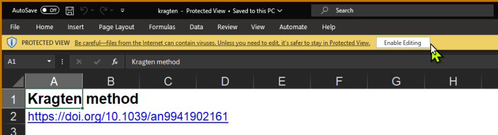

Estimating the measurement uncertainty is a common activity in chemical laboratories. In the case of routine analysis and the validation of multiple methods, a rapid and reliable approach can be beneficial. Such alternative estimations are also useful for complex measurement models.
This VBA macro in Microsoft Excel estimates the measurement uncertainty by the Kragten method based on finite differences. The macros can be used for computing multiple measurement models and for sensitivity analysis.
Below you can find the instructions to run the macro.
Requirements
- MS Excel with macros enabled
- measurement model, standard uncertainties, degrees of freedom (optional)
Instructions
-
Download the file from:
-
kragten.xlsm. Save the file in a new folder. Later, this folder would be used to set trusted locations in Excel, or
-
git clone https://github.com/LeoSotoJ/Kragten-Uncertainty
-
-
Enable editing

- Add the macro to trusted sources
File > Options > Trust Center > Trust Center Options > Trusted Locations > Add new location… > Browse… Select the folder containing the Excel file. Click OK.
- Now, it should be possible to run the macro. Fill the table with the parameters, add the model formula, and select Run.
Notes:
-
To insert a new input variable, select a default row, copy, right click and Insert Copied Cells.
-
The macro can run over other opened workbooks. For this, open the macro and the desired workbook, click on Run and then select the data from the desired workbook.